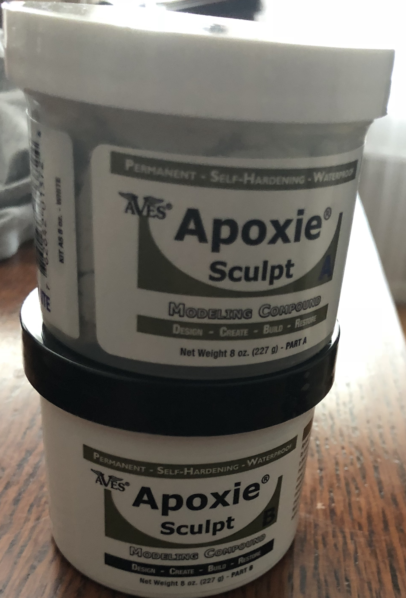
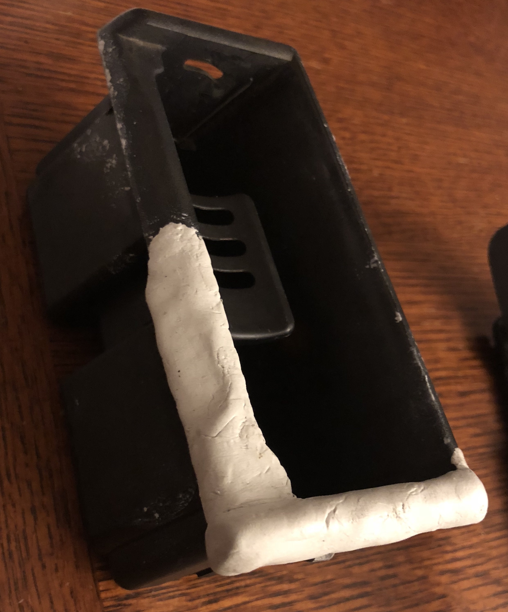
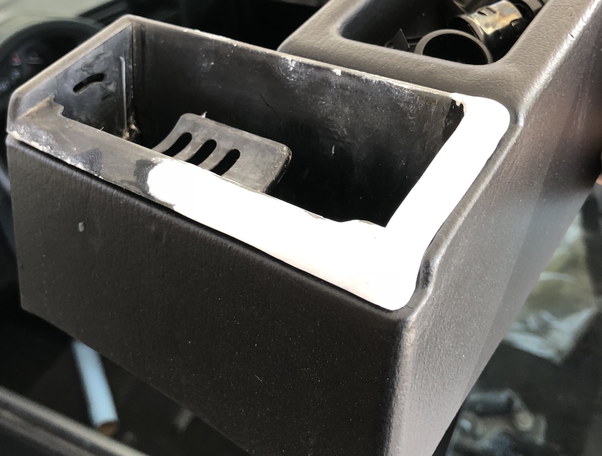
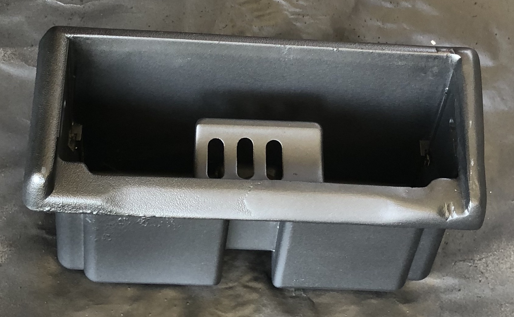
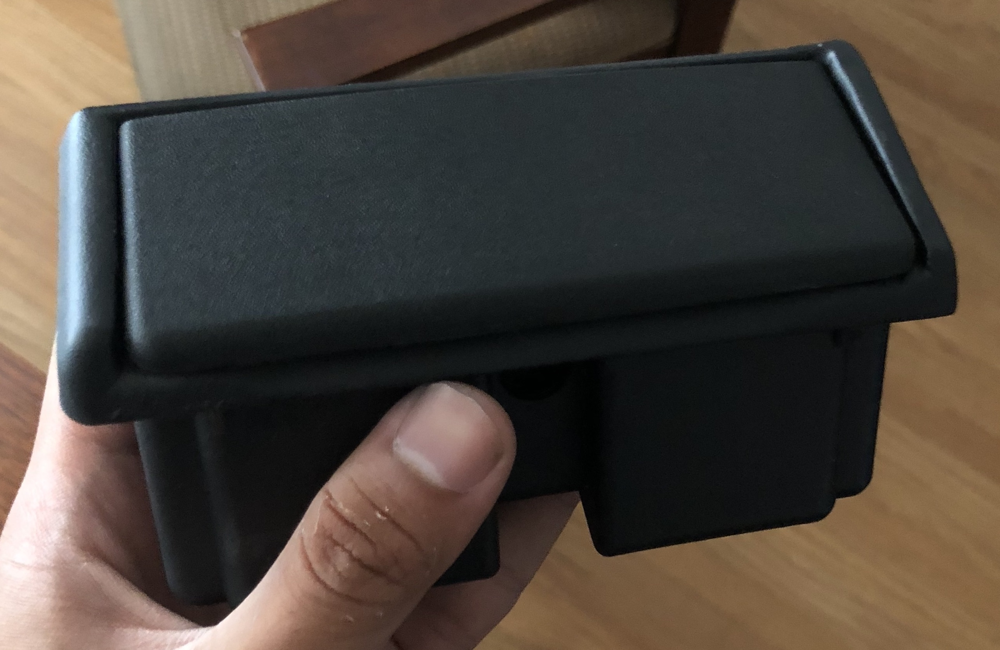
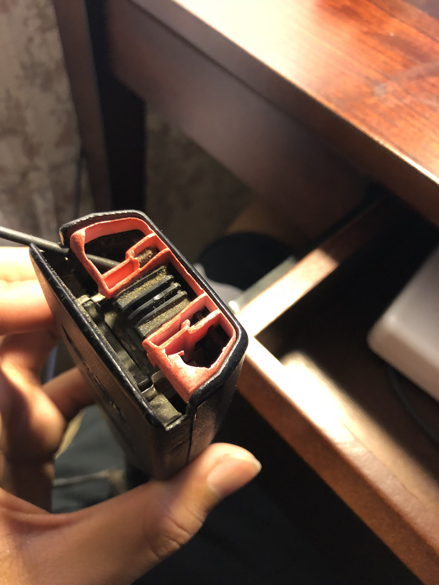
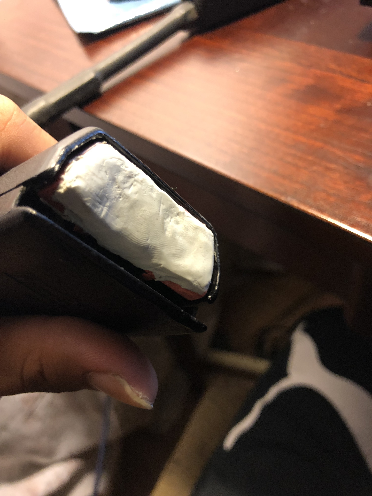
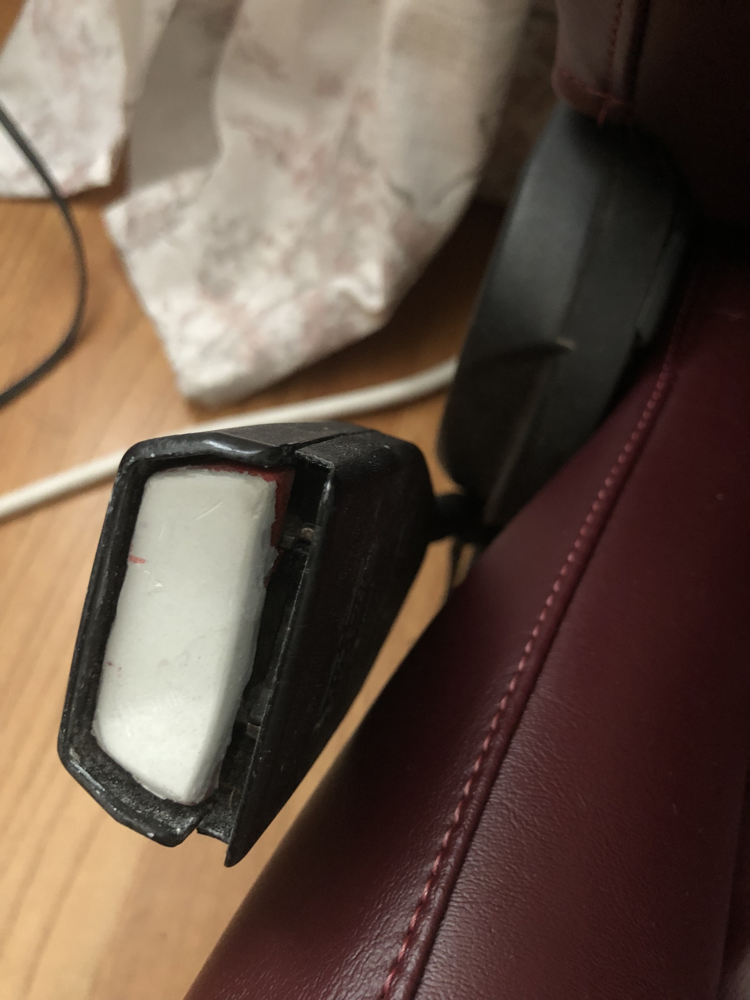

I was looking to buy a replacement but after some quick online shopping, I learned that ashtrays are EXPENSIVE. (Note: This is also when I realized that the cars of a "Car Guy" runs on money instead of gas)
So instead of dropping an unreasonable amount of money on an ashtray, I decided to try and fix the parts myself. But I don't know how to work with plastic. Most instructional videos I found online only demonstrated small repairs such as cracked or chipped plastic; and anything more complex than that required me to make a mold.
I thought about using a filler and sanding it to shape, since I had some for repainting the car but filler is liquid and wouldn't stay on. The only way for it to stick was to use a lot, which meant a lot of sanding and a lot of wasted product.
{kind=link}
I was thinking of biting the bullet and just spending the money on an ashtray, until I stumbled upon videos of someone modifying the shapes of rubiks cubes.
After binging on a few of his videos, I realized that epoxy putty could be the solution I was looking for.
There are various brands of epoxy putty, but I went with apoxie sculpt, which is an epoxy putty used by sculptors and model makers that's available on Amazon.

The product comes in 2 parts. Mixing the two parts will activate the product and will allow it to harden over time. You mix each part equally, so what I did was estimate how much I'd need and then divided that in half, taking that amount from each container.

Mix it together and use like clay! I molded it to a rough shape of what it should look like. I added a bit more than I needed so that I can sand it down and make a more precise and smooth final piece.

I sanded down the excess and shaped it using a dremel. I then used 120, 220, and 320 grit sandpaper to sand it smooth. The original plastic also has a bit of a texture, but I didn't bother recreating it. So I sanded the whole thing down with the 320 grit sandpaper to make it all smooth. If you want to keep the texture, it's a bumpy texture that you can probably mimic by lightly dabbing black paint on the surface with a paper towel or buying paint with a bumpy texture(Plastidip has a bumpy texture that might work well).

Doing a test fitting to see if I shaped it correctly. Not bad.

All that's left is to paint it black. I used plain black spray paint, nothing too fancy. It's a small piece in the interior so I'm not too worried about it being perfect, and since it's not exposed to the outer elements, I didn't invest too much time.

I replaced the lid and viola! Done! My sculpting skills aren't the best, but looking without scrutiny the difference is unnoticeable. Overall I'm happy with the outcome.
I also did this with the seatbelt buttons.

Before.

Filled it in.

Sanded! Now I don't have to worry about that uncomfortable feeling on my fingers when I press down on the button.
This method is useful for almost any broken plastic pieces of the car(As long as it's nothing structurally significant). Hope this helps anyone wanting to save a bit of money on repairs!